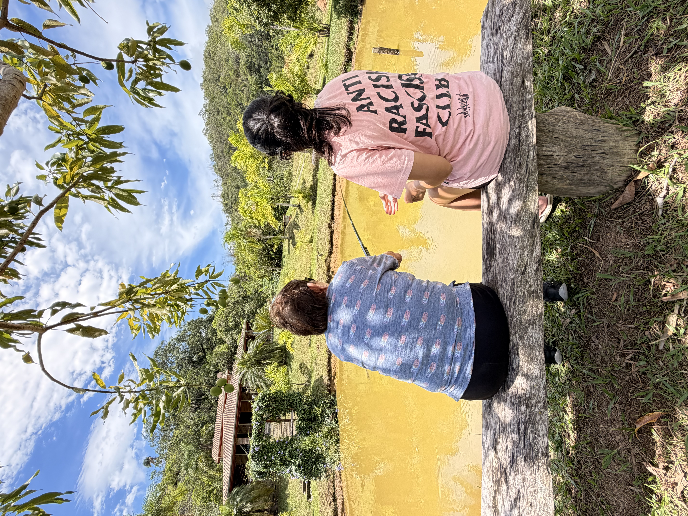
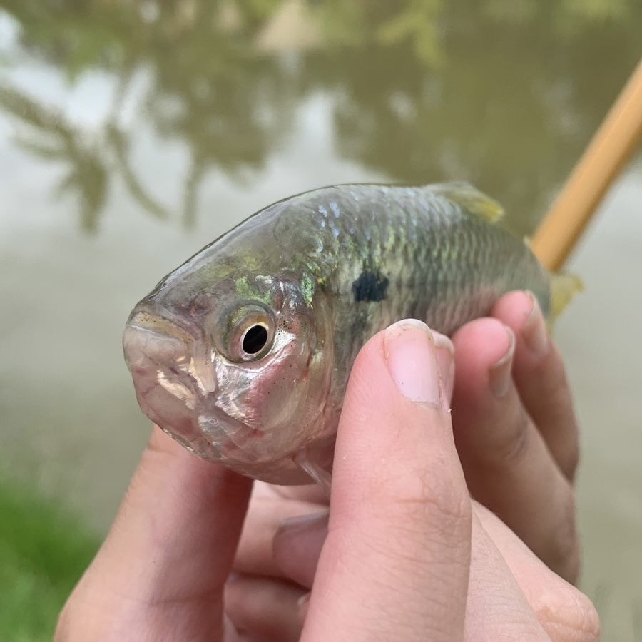

Início / Aprenda / Técnicas de pesca
GUIA 03 · EDIÇÃO PESQUEIROS
Técnicas de pesca
Uma boa pescaria começa na observação e termina no cuidado. Aprenda a escolher o ponto, apresentar a isca e conduzir a captura com responsabilidade.

UM PASSO DE CADA VEZ
01 Observe o lago
02 Escolha a isca
03 Ajuste a montagem
04 Capture e solte com cuidado
01 · LEITURA DO AMBIENTE
O melhor ponto começa no olhar.
Não é preciso lançar o mais longe possível. Tire alguns minutos para observar e conversar com a equipe. O comportamento dos peixes muda ao longo do dia.
Margens, sombras e estruturas
Vegetação, sombra e mudanças de profundidade podem oferecer abrigo e alimento. Observe sem entrar em áreas restritas nem arremessar junto a obstáculos que tornem a retirada do peixe insegura.
Movimento e condições da água
Peixes na superfície, vento e água em movimento dão pistas, não certezas. Respeite o afastamento de aeradores e não suponha que um peixe respirando na superfície esteja procurando isca.
Espaço para pescar com segurança
Escolha uma margem estável, com área livre atrás para o arremesso e acesso para o passaguá. Combine distâncias com quem está ao lado e nunca lance sobre outras linhas.
02 · APRESENTAÇÃO DO ALIMENTO
A isca certa depende do contexto.
Considere a espécie, o alimento usado no pesqueiro e as regras locais. Troque uma variável por vez para entender o que mudou, sem lançar alimento em excesso na água.
Massas e rações
Podem ser úteis para peixes acostumados ao manejo alimentar, como tilápias e tambaquis. A consistência deve permitir que a isca permaneça no anzol sem esconder sua apresentação. Confirme composição e uso permitidos.
Iscas naturais
Minhocas, frutos e outras iscas têm aplicações diferentes. A dieta da espécie ajuda a orientar, mas não garante a captura. Iscas animais e organismos vivos podem ser restritos; consulte a equipe antes de usar.
Iscas artificiais
Imitam presas ou provocam reação por movimento. Exigem recolhimento e apresentação adequados ao peixe, não apenas à aparência da isca. Verifique se seu uso é autorizado e mantenha distância segura de outras pessoas.
03 · SIMPLICIDADE ANTES DE COMPLEXIDADE
Três apresentações para entender.
Uma montagem posiciona a isca na água. Peça demonstração dos nós e teste o conjunto fora da área de circulação; pesos, distâncias e tamanhos não são universais.
| APRESENTAÇÃO | QUANDO FAZ SENTIDO | O QUE OBSERVAR |
|---|---|---|
| Com boia | Ajuda a apresentar a isca em uma profundidade definida e permite acompanhar toques visualmente. | Ajuste a profundidade com orientação. Use uma boia compatível com o peso da montagem e evite excesso de componentes. |
| No fundo | Posiciona a isca próxima ao fundo, quando isso combina com os hábitos do peixe e as condições do lago. | O peso deve apenas cumprir sua função. Confira obstáculos, sensibilidade da linha e permissão de uso de chumbos. |
| Na superfície | Pode ser usada quando há alimentação nessa camada e a isca autorizada consegue se manter flutuando. | Observe vento e deslocamento da isca. Não confunda respiração de um pirarucu com atividade alimentar. |
04 · A PESCARIA NÃO TERMINA NA FISGADA
O cuidado faz parte da captura.
Conduza o peixe sem movimentos bruscos e evite prolongar a briga. Antes de retirá-lo, prepare o apoio e chame a equipe quando necessário. A foto é opcional; o bem-estar do peixe, não.

Mãos molhadas
Molhe as mãos e o apoio antes do contato. Evite chão seco e superfícies ásperas para proteger a pele e o muco do peixe.
Corpo bem apoiado
Sustente o peixe na horizontal com apoio adequado. Não toque guelras e olhos; em peixes grandes, nunca levante na vertical ou pelo rabo.
Menos tempo fora d’água
Deixe alicate e material prontos. Reduza o tempo de exposição e siga a orientação da equipe para retirar o anzol e realizar a soltura.
Na dúvida, pare e peça ajuda.
Siga as regras do pesqueiro, use equipamento adequado e solicite auxílio da equipe, especialmente com pirararas e pirarucus. Não improvise contenção, não force um anzol profundo e nunca arraste o peixe pela margem.